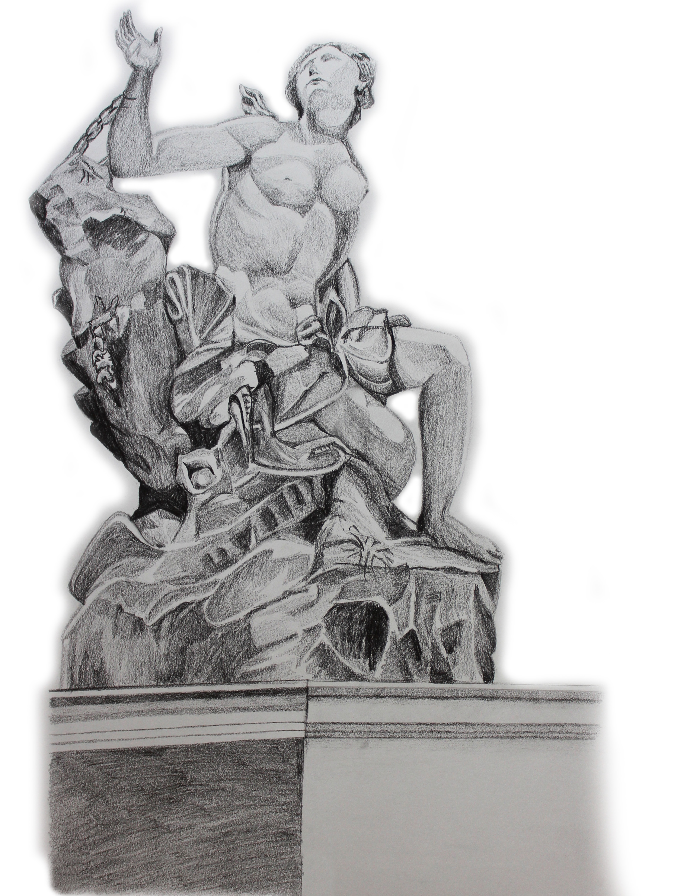
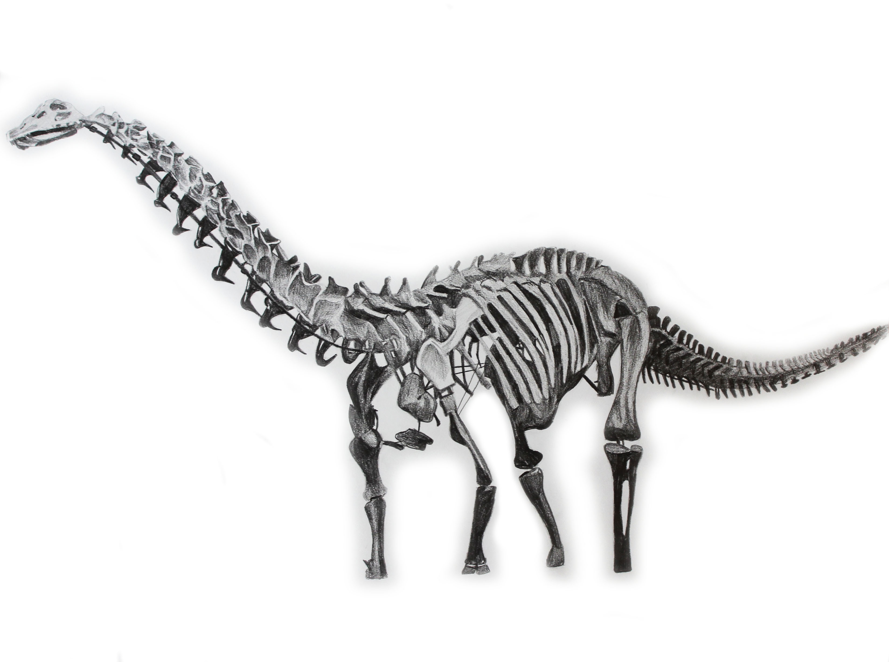
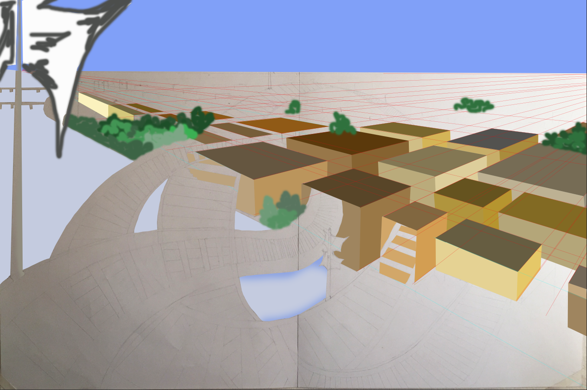
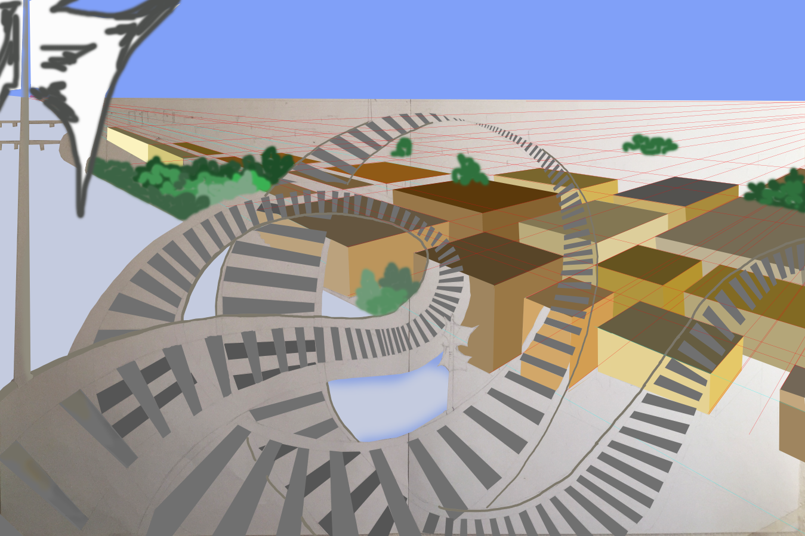
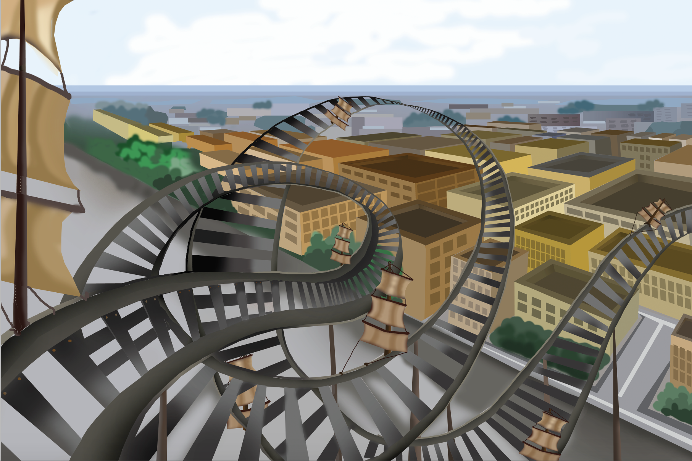
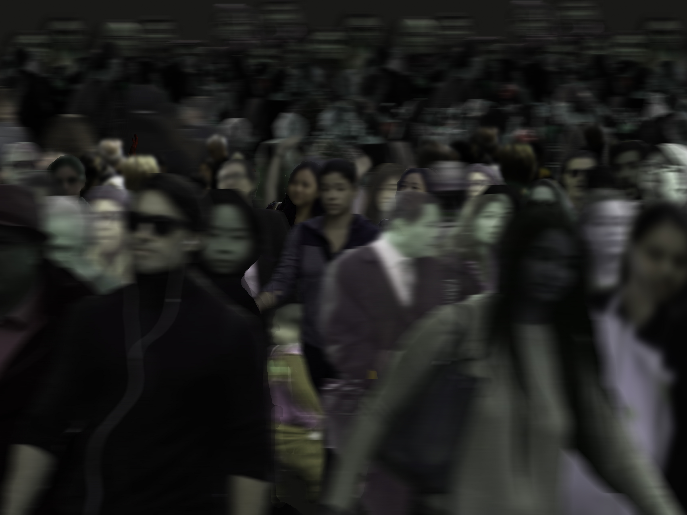
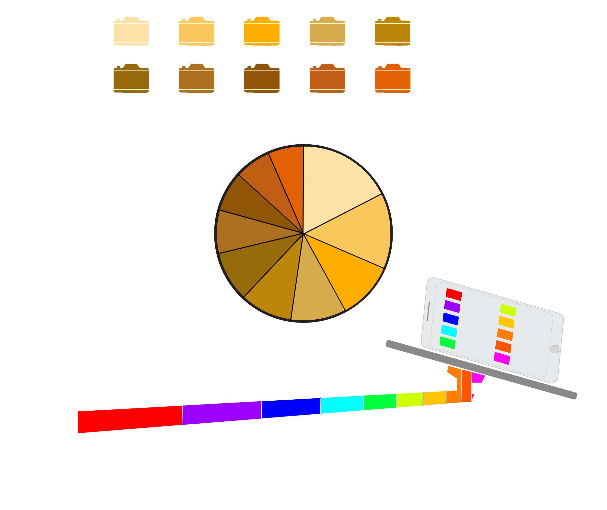

I visited the Petrie Sculpture Court, in the Metropolitan Museum of Art where I selected the ‘Andromeda and the Sea Monster’ sculpture to draw. I had to consider value, line, gesture and the three main masses while working on it.
MET DRAWING

This a pencil drawing of a dinosaur skeleton at the ‘American Museum of Natural History’. I had to keep in mind value, and positive and negative space while making this.
DINOSAUR SKELETON

Two layer- internal torso skeleton and the outer body. Both where drawn and shaded with pencils and then merged on Photoshop.
TORSO X-RAY


This is a cinematic perspective drawing of a rollercoaster with sails on it and the city scene in the background. I have used dull shades of brown, green and grey. The perspective of the buildings has come out well and I like the way the buildings are diminishing towards the horizon line.
PERSPECTIVE

Using Photoshop I have created a crowded scene demonstrating "Spatial Phobia".
crowded places
SPATIAL PHOBIA


This is an infographic on the “Selfiest Cities in the World”. PhotoShop and Illustrator has been used to create it.